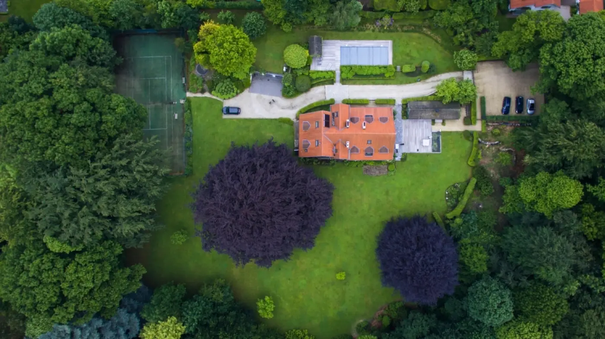

Key points
- In 2025 the median house price in Woluwe-Saint-Pierre was €746,500, the highest of the 19 Brussels municipalities (regional median: €510,000).
- The median apartment price there reached €360,001 (+4.3% in 2025), against €265,000 for the Region.
- 51.8% of apartments in the municipality are bought by single people and 28.4% of buyers come from outside Brussels.
- With Diamant Consult, selling costs 2% excl. VAT, all-inclusive, i.e. €14,930 excl. VAT on a house sold for €746,500.
How much is a house worth in Woluwe-Saint-Pierre in 2026?
In 2025 the median house price in Woluwe-Saint-Pierre was €746,500, the highest of all 19 Brussels municipalities, according to the notaries' 2025 review on notaire.be. The regional median was €510,000. Over five years (2021 to 2025), house prices there rose by 9.8%.
A median is a benchmark, not a sale price: the value of your house depends on the street, floor area, garden, condition and EPC. Our page sell in Woluwe-Saint-Pierre shows comparable sales in the area.
And an apartment in Woluwe-Saint-Pierre?
The median apartment price in Woluwe-Saint-Pierre reached €360,001 in 2025 (+4.3% over the year), again the highest in Brussels, according to notaire.be. The regional median was €265,000. Most properties sold in the region are apartments (70.3% of sales), and prices in Woluwe-Saint-Pierre range from about €280,000 to €490,000.
Who buys in Woluwe-Saint-Pierre?
According to notaire.be, 51.8% of apartments in the municipality are bought by single people and 28.4% of apartment buyers come from outside Brussels. The average buyer age in the Brussels Region is 39.8. For you, that means demand from both one-person households and families looking for space and greenery.
When should you sell? How long does it take?
The number of sales rose 7.1% in Brussels in 2025 (against 14.2% in Belgium), per notaire.be. For the time a sale takes from listing to deed, see how long does it take to sell in Brussels. With high prices in the municipality, a realistic asking price matters: an overpriced property stays online and tends to sell for less in the end.
Which documents should you prepare before selling?
At a minimum you need a valid EPC certificate, the soil certificate, the planning information and your ownership documents. Details are in our article on the EPC certificate for selling. If the property comes from an inheritance, also read selling an inherited property in Brussels.
What does selling with Diamant Consult cost?
The commission is 2% excl. VAT, all-inclusive: photos, listings, viewings and follow-up through to the deed at notary Stephan Borremans. On a house sold for €746,500, that is €14,930 excl. VAT. To compare, read how much an estate agent costs in Brussels. All the steps are in our guide to selling a house in Brussels.
How do you get started?
Diamant Consult welcomes you for a free first meeting with no obligation, in Schaerbeek (Avenue du Diamant 138), where we set the asking price together. If you are weighing neighbouring areas, see also Woluwe-Saint-Lambert and Etterbeek. Write to us by e-mail.
Selling in your municipality
Statbel median prices, neighbourhoods and our 2% excl. VAT service: find the page for your municipality.
- Woluwe-Saint-Pierre
- Etterbeek
- Schaerbeek
- Woluwe-Saint-Lambert
- Anderlecht
- Auderghem
- Berchem-Sainte-Agathe
- City of Brussels
- Evere
- Forest
- Ganshoren
- Ixelles
- Jette
- Koekelberg
- Molenbeek-Saint-Jean
- Saint-Gilles
- Saint-Josse-ten-Noode
- Uccle
- Watermael-Boitsfort
- Waterloo
- La Hulpe
- Wavre
- Rixensart
Read next
Frequently asked questions
What is the price of a house in Woluwe-Saint-Pierre in 2026?
According to the notaries, the median house price in Woluwe-Saint-Pierre was €746,500 in 2025, the highest in Brussels. The real price of your property depends on the street, condition, garden and EPC.
How much is an apartment in Woluwe-Saint-Pierre?
The median apartment price reached €360,001 in 2025 (+4.3%), with a range of roughly €280,000 to €490,000.
How much does selling my house in Woluwe-Saint-Pierre cost with Diamant Consult?
The commission is 2% excl. VAT, all-inclusive, paid only if the property sells. The first meeting is free and without obligation.
Who buys in Woluwe-Saint-Pierre?
In 2025, 51.8% of apartments were bought by single people and 28.4% of apartment buyers came from outside Brussels (notaire.be).
Sources
Thinking of selling? Diamant Consult sells your house or apartment anywhere in Brussels for 2% excl. VAT, all in: free first meeting, professional photos, Immoweb listing, viewings and follow-up through to the notary deed. Book a meeting →